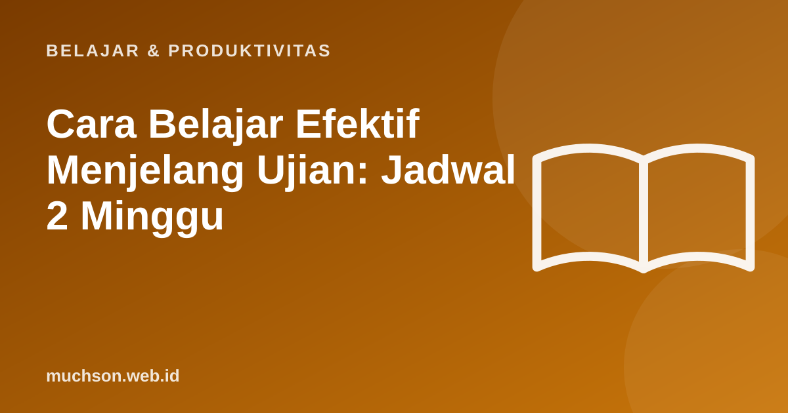

Beranda › Artikel › Belajar & Produktivitas
Belajar & ProduktivitasCara Belajar Efektif Menjelang Ujian: Jadwal 2 Minggu
Membaca ulang buku dan menstabilo halaman adalah cara belajar paling populer menjelang ujian, sekaligus salah satu yang paling tidak efektif menurut riset. Artikel ini merangkum strategi yang terbukti bekerja, lalu menyusunnya menjadi jadwal dua minggu yang realistis, cocok untuk ujian sekolah, UTBK, maupun ujian kuliah.

Yang terbukti efektif dan yang tidak
Tinjauan Dunlosky dan rekan (2013) menilai sepuluh teknik belajar populer berdasarkan bukti penelitian:
| Teknik | Kenapa efektif / tidak |
|---|---|
| Latihan soal (practice testing) | Mengingat kembali memperkuat ingatan dan menunjukkan bagian yang belum dikuasai |
| Belajar berjarak (distributed practice) | Mengulang beberapa kali dengan jeda hari lebih tahan lama dari belajar sekaligus |
| Mencampur topik (interleaving) | Melatih memilih strategi yang tepat, seperti di ujian sebenarnya |
| Membaca ulang dan menstabilo | Terasa produktif karena materi tampak akrab, tetapi sedikit melatih mengingat |
Jadwal 2 minggu
Cara latihan soal yang benar
- Kerjakan soal tanpa melihat catatan.
- Periksa jawaban dan catat kesalahan di "buku kesalahan": soal, jawaban salah, penyebab, cara benar.
- Ulang soal yang salah 2-3 hari kemudian.
- Campur topik pada sesi latihan, jangan selalu satu bab sekaligus.
Buku kesalahan adalah salah satu alat paling berharga menjelang ujian. Kesalahan yang sama cenderung berulang, dan buku ini membuat Anda menghadapi pola kesalahan sendiri.
Jangan korbankan tidur
Tidur berperan penting dalam menyimpan ingatan. Begadang semalam sebelum ujian memang menambah jam belajar, tetapi mengurangi kemampuan mengingat dan berpikir jernih keesokan harinya. Remaja 13-18 tahun dianjurkan tidur 8-10 jam, dan orang dewasa minimal 7 jam.
Hari H
Tanya jawab
Cara belajar apa yang paling efektif untuk ujian?
Apakah membaca ulang buku efektif?
Berapa lama belajar sehari menjelang ujian?
Apakah begadang sebelum ujian membantu?
Sumber dan bacaan lanjut
- Dunlosky, J. dkk. (2013). Improving students' learning with effective learning techniques
- Cepeda, N. J. dkk. (2006). Distributed practice in verbal recall tasks: A review and quantitative synthesis. Psychological Bulletin
- Paruthi, S. dkk. (2016). Rekomendasi jumlah tidur
- Spaced repetition (artikel terkait)